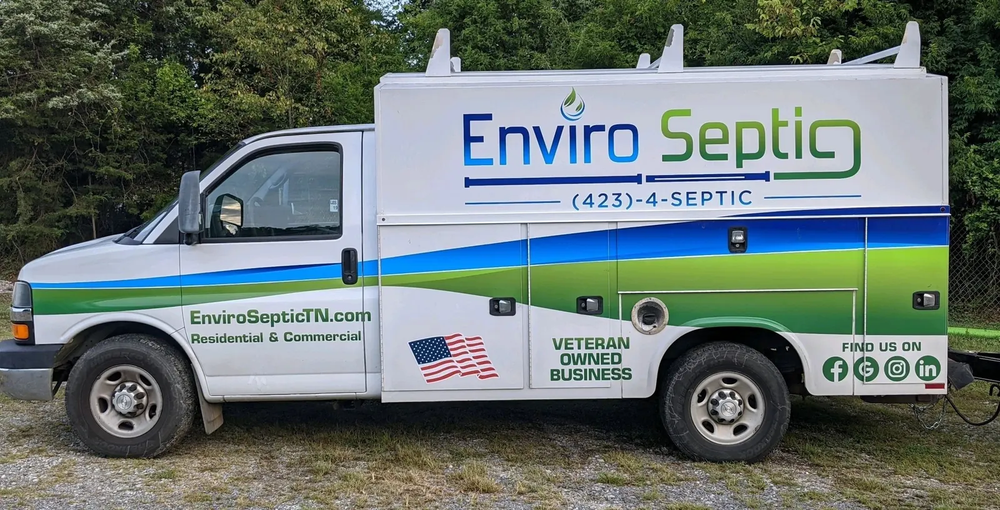
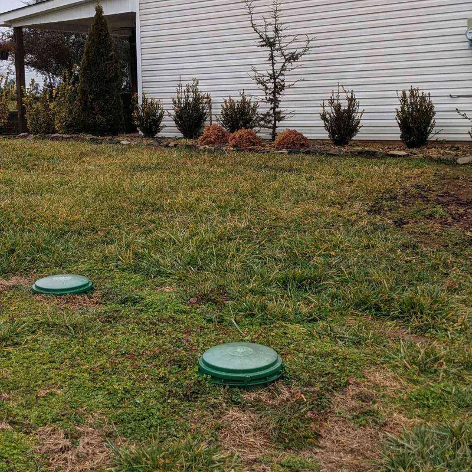
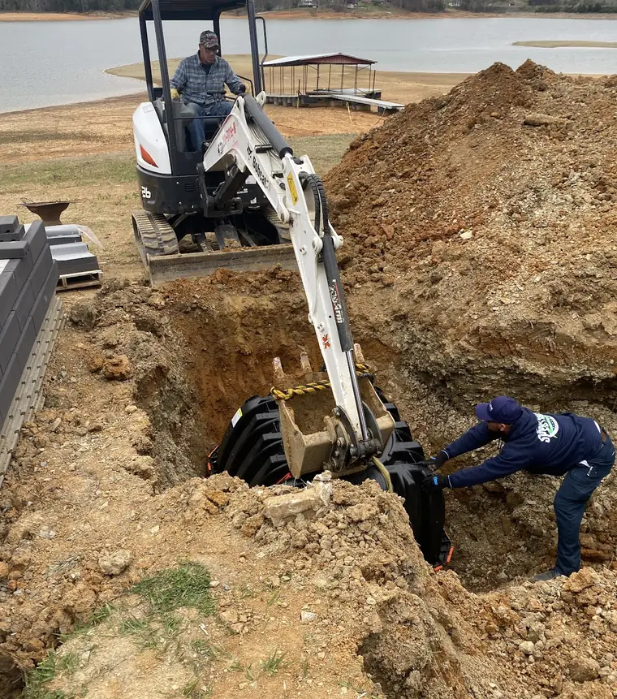
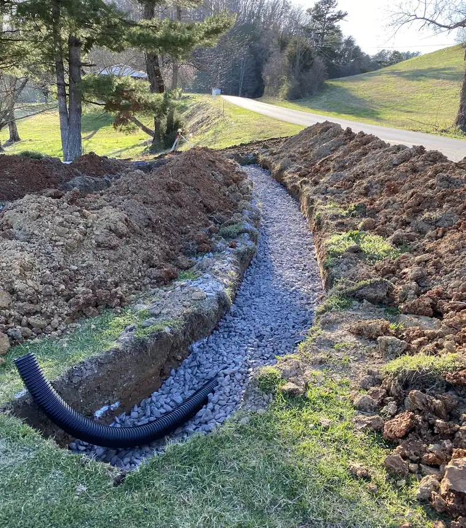
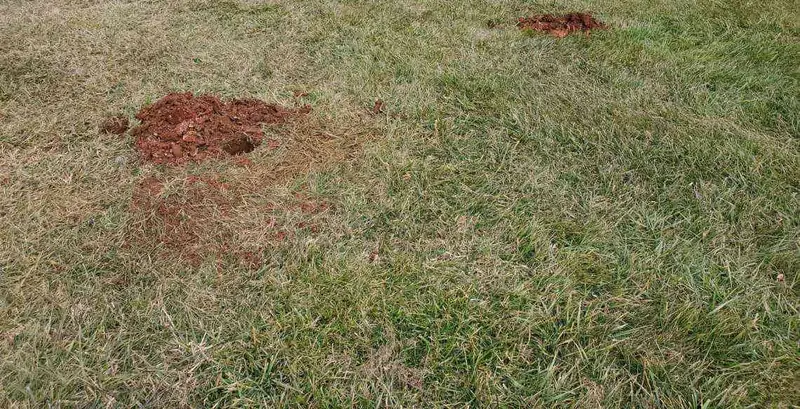

- Veteran owned
- Residential & commercial
- 24/7 emergency service
Septic pumping, repairs and installs, from Morristown out to seven counties.
Enviro Septic pumps, inspects, repairs and installs septic systems for homes and businesses across Hamblen, Jefferson, Cocke, Grainger, Greene, Hawkins and Sevier counties. Call 8 AM to 8 PM, and around the clock when it’s backing up.

Septic trouble?
What is your septic doing?
Pick the closest one. You land on a short form that tells the office what’s going on, when it was last pumped, and whether you know where the tank is, so the right truck shows up the first time.
- Slow drainsSinks and showers draining sluggish
- Backing upWater or sewage coming up inside
- A smellOutside by the tank, or up the drains
- Wet, mushy groundOver the tank or the field lines
- Gurgling pipesToilets and drains bubbling
- Pumping is dueNothing wrong, just been a while
- Buying a houseInspection for the closing
- Something elseAlarm, broken lid, riser, line jetting
How a pump-out goes
They stay off your lawn when they can.
- You pick the day.
Call and they schedule a time and a day with you.
- Find the lid, save some money.
In their words: “If you want to save some money, it is a good idea for you to know where your septic is. You can uncover the lid to your tank before we arrive.” Don’t know where it is? They locate it with a device.
- The truck parks, the hose walks.
“We will use extension hoses to avoid driving our trucks onto your lawn whenever possible.”
- The tank gets looked at, too.
While it’s open they inspect it to make sure it isn’t leaking and is working before they leave.
“Found the lid to the septic tank on the first probe. Very little digging was done. Cleaned out the tank with no problem and came back the next day to install a “quick access” lid to replace the old lid.”
K. M. Colwell Jr., Google, 2 years ago

Their work
Not just pumping. Tanks set and field lines run.
From simple septic repairs to complex installations. These are photos Enviro Septic posted themselves.

Setting a new tank by the lake.

New field lines, chambers in the trench.

Gravel and pipe field line, May 2021.

Same job, the tank going in.
Enviro Septic Inspection ReportFrom their sample report
- Condition of top and lidsSatisfactory
Riser covers in good condition.
- Condition of outlet baffleSatisfactory
The outlet baffle was viewed from the interior of the tank and is in satisfactory condition.
- Condition of inlet baffleUnsatisfactory
Inlet baffle has been removed.
- Absorption systemSatisfactory
The field was probed in six locations and found no signs of seepage or other signs of system failure.


Buying a house?
A septic inspection you can read before closing.
Inspection for real estate house closings: every part of the system gets a line, a rating and a photo, so you and your agent see exactly what’s in the ground.
“I put a bid on a property in Hawkins County, TN and hired Enviro Septic to inspect the septic tank. Very pleased. Job was highly professional, detailed and efficient. Report was first rate and the person I worked with, Kris, was incredibly generous with his time…”
Steven M., Google, 3 years ago
4.8 stars on Google
What their neighbors say
“I called three different companies in my area and Enviro Septic was the best priced, with the fastest response time. I called on a Sunday got an answer and they were out the next morning. Kris was the technician and he had a great personality. … With it being an easy fix, he volunteered to fix it for free since he was already there.”
“It was a pleasure to work with Enviro Septic. Kris was very informative on the first call. He scheduled an appointment within a week when other businesses were not available for a month or more. Michael arrived on time, was professional, friendly and very competent. He found the septic tank lid with minimal digging.”
“Had our septic tank pumped, Randy was very professional and took great care of us. We were able to schedule the job on the next day. Matt arrived on time and finished the job quickly and efficiently. They texted me at key points along they way all the way through to completion.”
“Chris was awesome, helped us figure out another problem that was causing the smell. -over and beyond climbing under the house .. But we pumped the septic tank anyways and he was very professional, curtious and pricing was very reasonable. We will definitely use again. Vet friendly!!”
“Enviro Septic was recommended by my plumber. From the first call they were very professional and courteous. I was constantly made aware of their arrival by text and actually came earlier (which I was alerted by text) than my original appointment.”
“This business is awesome..they located my septic , inspected it, and also put a new lid with a riser on it . Very professional and reasonably priced”
“We had Enviro Septic pump out our tank and add a riser to the tank to simplify future work. Randy and Matthew were great guys to work with.”
Veteran owned business
“The majority of us are veterans. We will always take care of our own!”
That’s the owner, answering a review on Google. Enviro Septic is locally owned and operated in Morristown, built on what they call honesty, integrity and professionalism.
Seven counties
- Hamblen
- Jefferson
- Cocke
- Grainger
- Greene
- Hawkins
- Sevier
Call (423) 473-78428 AM to 8 PM, emergency service 24/7.
info@enviroseptictn.com